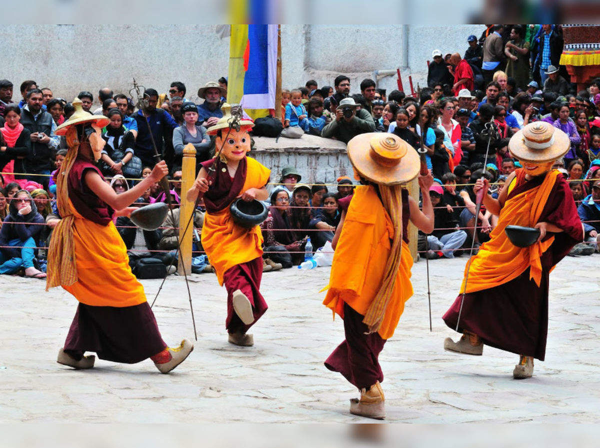

FESTIVALS IN LADAKH

A festival is an event ordinarily staged by a community,centering on and celebrating some unique aspect of that community and its traditions,often marrked as a local or national holiday,like HEMIS FESTIVAL, LOSAR FESTIVAL, SINDHU DARSHAN are some festivals in LADAKH.
IMPORTANT FESTIVALS ARE: